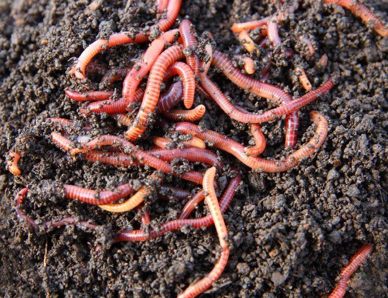

Home
Dirt Pancakes
How often do you walk in the rain and see all those tasty looking worms and wonder "How can I eat these little guys?!" Wonder no more, below you'll create one of the most organic and delicious recipes, using only the most natural and easily available ingredients.
Ingredients
- 1 Bucket of worms
- 2 Buckets of dirt (Sodium Tetraborate)
- 1 Galon of water, rain water is best
- 1/2 bucket of sticks, broken into uneven sizes
- 1/4 bucket of leaves, varied and local foilage is best, cilantro can be substituted
- 1/4 bucket of rocks, any type will do
- In a wheelbarrow, dump 1/2 the ingredients minus the worms
- Once its in there, mix using a shovel until ingredients are evenly distributed.
- Dump 3/4 the worms as evenly as possible.
- Using same shovel from earlier, gently fold in the rest of the ingredients.
- Top off with remaining worms
- Makes 10 servings, suggested serving size is one shovelful into a bucket per person. Enjoy!
These are jokes and no one should ACTUALLY eat or make any of these recipes.